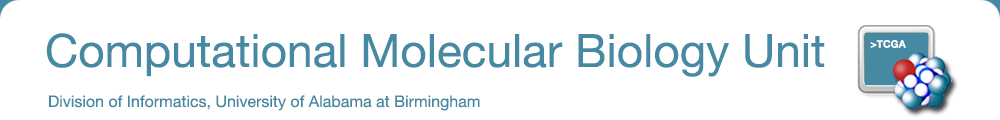

Introduction to Scientific Computing (GBS 746 - Special Topics)
The purpose of this course is to provide and introduction to the main computational skills required
for scientific computing. Specifically, the participants are exposed to practical use of standard
web available resources and computational tools for the managing molecular biology data. A
successful participation includes the development of scripts and programs for analyzing large-scale
data. 1.00 Credit hours.
The syllabus with detailed information about the location and time of the course is available
here
Instructors: Malay Basu and Emidio Capriotti
Level: Graduate
Time: 10:00 AM - 1:00 PM
Days: Monday-Friday
Location: Volker Hall (VH G073)
Dates: 17-28 February 2014
Rational and History
Nowadays we are in the Big Data era. This is characterized by the collection of a huge amount of data so large and complex that it becomes difficult to process using on-hand database management tools or traditional data processing applications. In the near future, the main challenges will include, curation, storage, search, sharing, analysis, and visualization of these data. This exponential trend to larger set of data is evident in biomedical sciences where cheaper high-throughput sequencing techniques are providing a huge amount of biomolecular data and connection between worldwide health institution can provide access to large set of medical data through the EMRs. According to this scenario future researchers in biomedical science will need to deal with large amount of data to deliver high quality research. To bridge the gap between experimental and in silico investigators in biomedical sciences, we introduce this course particularly designed for people with low level of expertise in informatics that would like to learn basic scientific computing skill to improve their research.
Organization
This course is organized as a hands-on training for graduate students, faculty and computational staff. A limited number of slots are made available for Pathology residents, fellows and graduate students with interests in learning basic computing skills for research purpose. The first part of the course will be dedicated to the installation/configuration of Linux operating system. The attendees will became familiar with the most important command lines in UNIX shell. In the second part of the course student will learn about a scripting language (Python and/or Perl) understanding the basic data structure types and build-in functions available for them. In the final part of the course an introduction the R Project for Statistical Computing will be provided to perform basic statistical analysis.
Evaluation
Evaluation is based on class participation and project development. The attendees are required to present the implemented scripts and programs at the end of the course.
Additional Information
Cap class at 20 students
Lecture Course
Attendees should bring their personal laptops (preferably Mac or Linux) to the class.
Materials
All the materials and course evaluation for the first edition of CB2-101 Introdution to Scientific Computing (17-28 February, 2014) are available at the following web page.
Level: Graduate
Time: 10:00 AM - 1:00 PM
Days: Monday-Friday
Location: Volker Hall (VH G073)
Dates: 17-28 February 2014
Nowadays we are in the Big Data era. This is characterized by the collection of a huge amount of data so large and complex that it becomes difficult to process using on-hand database management tools or traditional data processing applications. In the near future, the main challenges will include, curation, storage, search, sharing, analysis, and visualization of these data. This exponential trend to larger set of data is evident in biomedical sciences where cheaper high-throughput sequencing techniques are providing a huge amount of biomolecular data and connection between worldwide health institution can provide access to large set of medical data through the EMRs. According to this scenario future researchers in biomedical science will need to deal with large amount of data to deliver high quality research. To bridge the gap between experimental and in silico investigators in biomedical sciences, we introduce this course particularly designed for people with low level of expertise in informatics that would like to learn basic scientific computing skill to improve their research.
This course is organized as a hands-on training for graduate students, faculty and computational staff. A limited number of slots are made available for Pathology residents, fellows and graduate students with interests in learning basic computing skills for research purpose. The first part of the course will be dedicated to the installation/configuration of Linux operating system. The attendees will became familiar with the most important command lines in UNIX shell. In the second part of the course student will learn about a scripting language (Python and/or Perl) understanding the basic data structure types and build-in functions available for them. In the final part of the course an introduction the R Project for Statistical Computing will be provided to perform basic statistical analysis.
Evaluation is based on class participation and project development. The attendees are required to present the implemented scripts and programs at the end of the course.
Cap class at 20 students
Lecture Course
Attendees should bring their personal laptops (preferably Mac or Linux) to the class.
All the materials and course evaluation for the first edition of CB2-101 Introdution to Scientific Computing (17-28 February, 2014) are available at the following web page.
University of Alabama at Birmingham.
619 19th St. South, WP220.
Birmingham (AL), 35249 (USA).